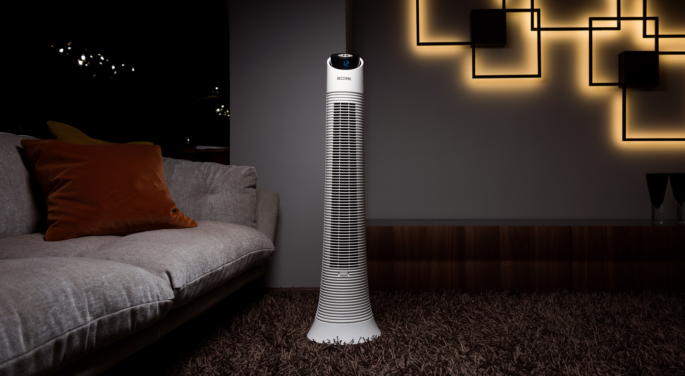
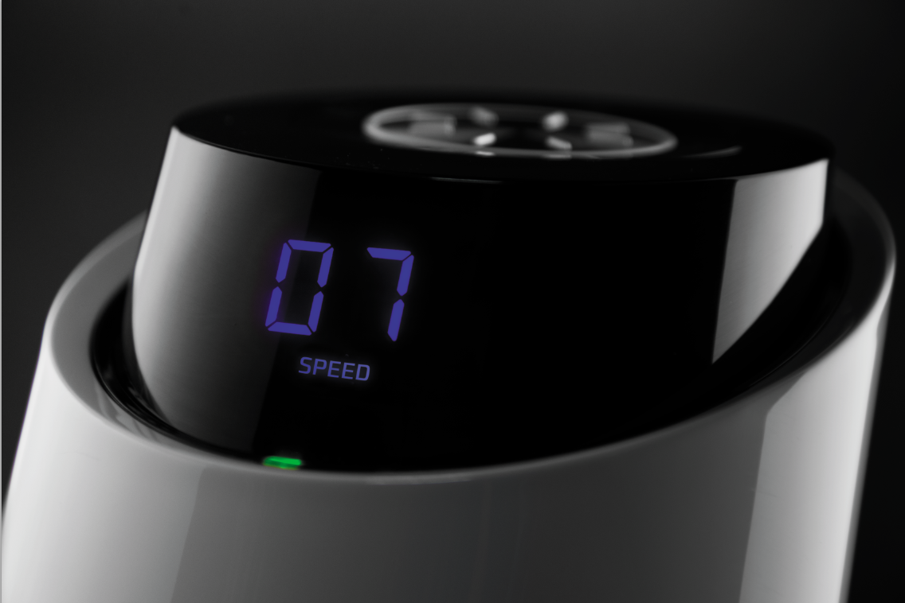
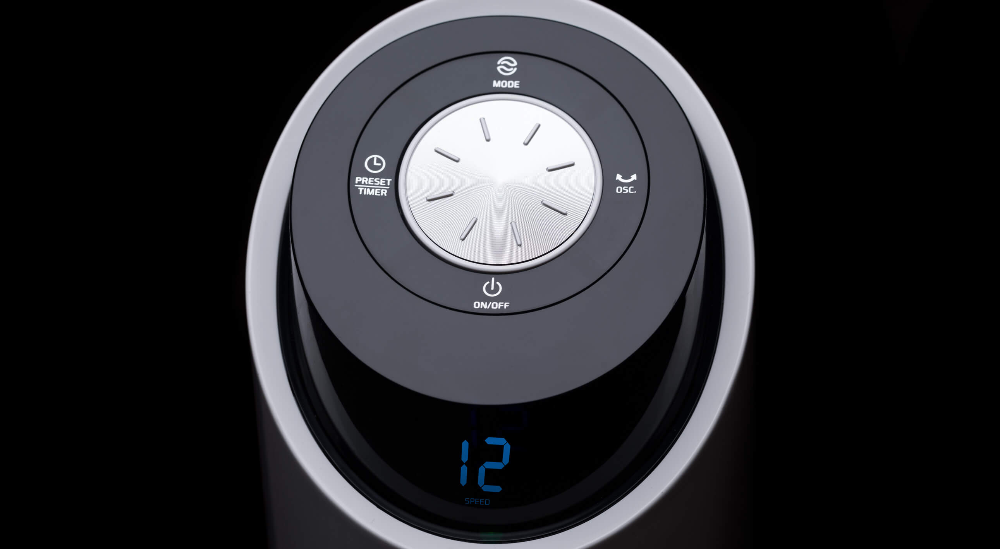
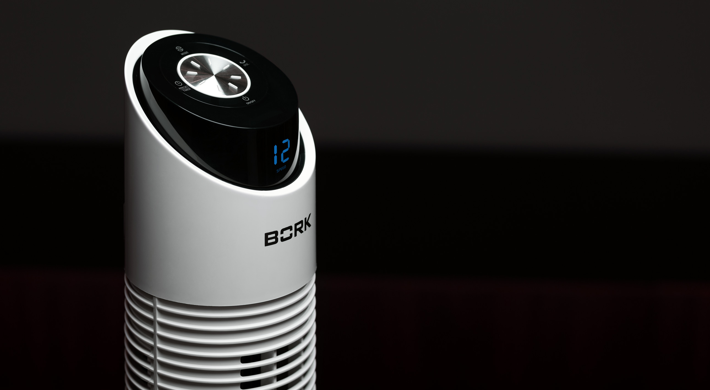
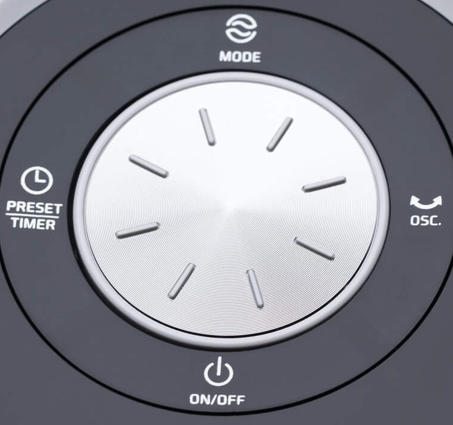
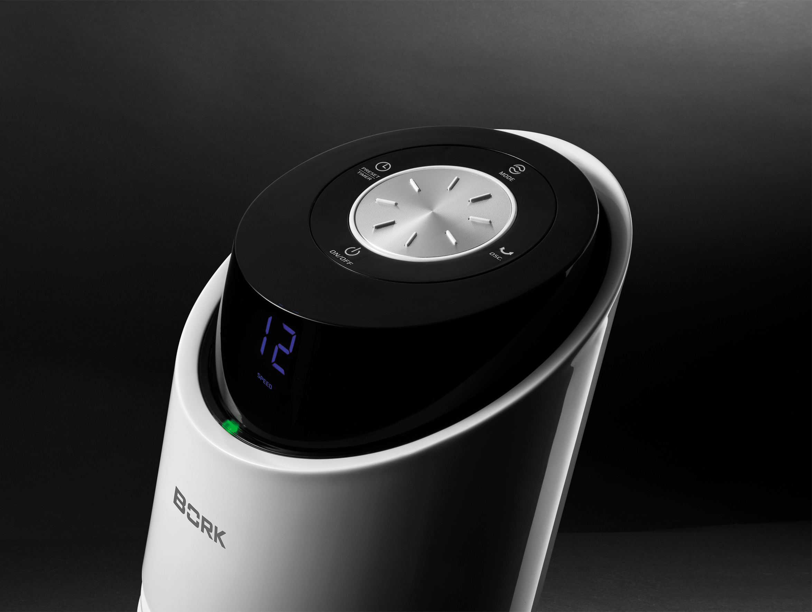
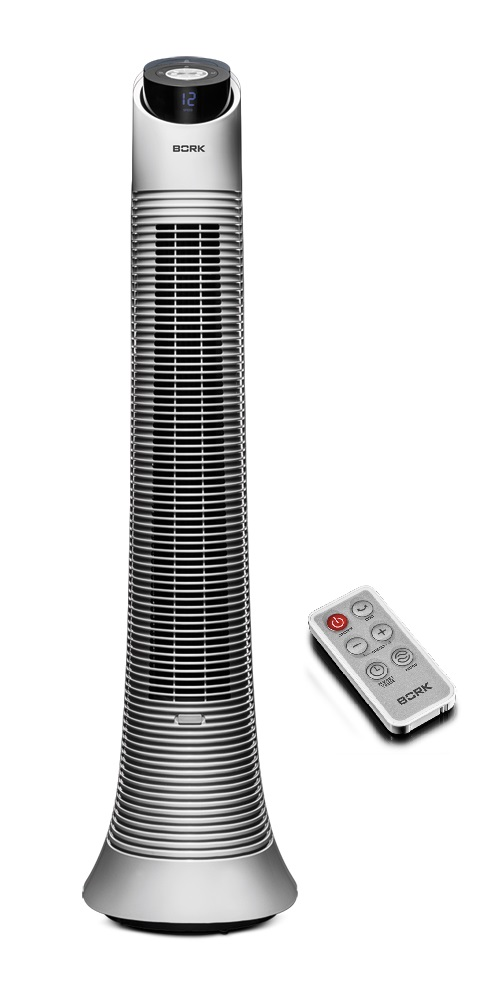

Вентилятор колонный Bork P602
Самый компактный беспроводной колонный вентилятор.
Работа от аккумулятора
Благодаря встроенному аккумулятору вентилятор работает до 10 часов (2 часа на максимальной скорости) без подключения к розетке, что позволяет разместить его в любом месте и делает абсолютно безопасным для детских комнат. Разряженный аккумулятор не должен быть препятствием комфортному климату. Вентилятор BORK P602 имеет индикацию заряда батареи: Зелёный – полный, Синий – батарея заряжается, Красный – недостаточный заряд.
При подключении к розетке зарядка начинается автоматически. Время зарядки 6 часов.
Большой выбор скоростей обдува
Выбор из 24 скоростей обдува создаст комфортную обстановку дома и за его пределами.
Вращение в горизонтальной плоскости
Дополнительный комфорт обеспечит функция поворота корпуса на 35⁰, усиливающая эффективность распределения воздушного потока.
Автоматические режимы работы
Режим ECO - Скорость работы вентилятора повышается или снижается в зависимости от температуры помещения, обеспечивая разумное энергопотребление.
Nature — режим естественной вентиляции. Скорости работы меняются поочередно, имитируя легкий бриз и создавая эффект проветривания помещения.
SLEEP — ночной режим Скорость снижается с определенным интервалом, постепенно достигая режима, наиболее комфортного для сна.
Ароматерапия
Вентилятор P602 станет источником изысканного аромата, если капнуть немного любимого парфюмерного масла на губку ароматизатора.
Удобное управление
Панель управления с режимами работы, таймером и настройками, пульт дистанционного управления — все это обеспечивает удобство управления и эксплуатации.
Высокая энергоэффективность
Двигатель постоянного тока обеспечивает экономичное энергопотребление до 32 Вт, поддерживая широкий диапазон скоростей при постоянной мощности.
Технические характеристики
Мощность: 32 Вт
Число режимов: 3
Число скоростей: 24
Воздушный удар: 4 м
Вес: 5,5 кг
Срок гарантии: 1 год
Установка таймера: 0,5-15 ч
Уровень шума: 45 дБ
Длина кабеля: 1,8 м
Страна производства: Китай